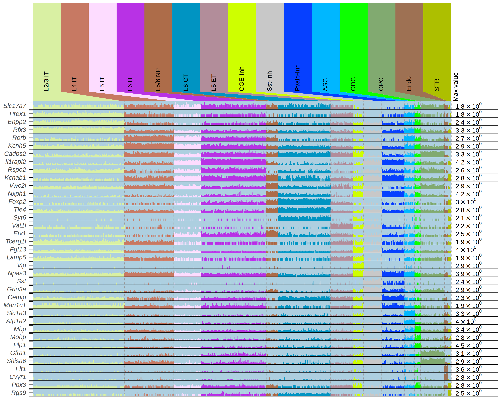
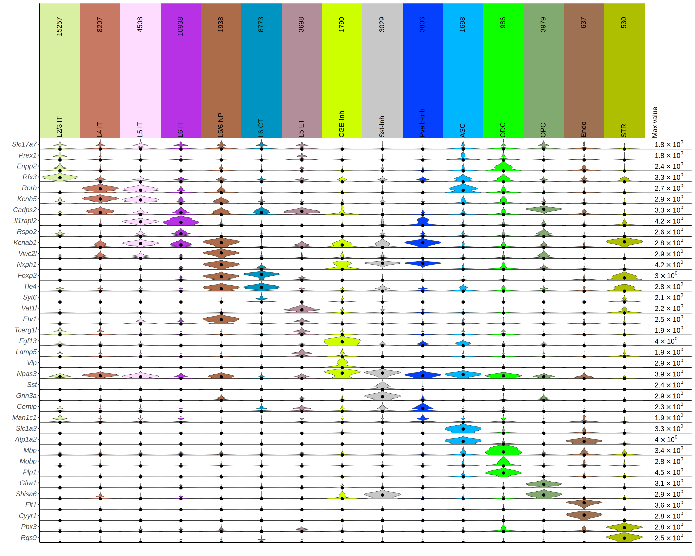
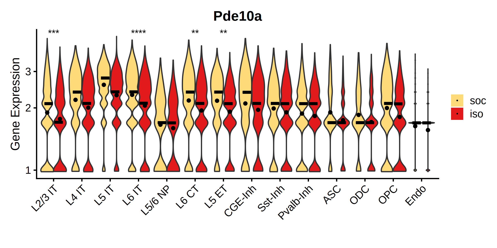
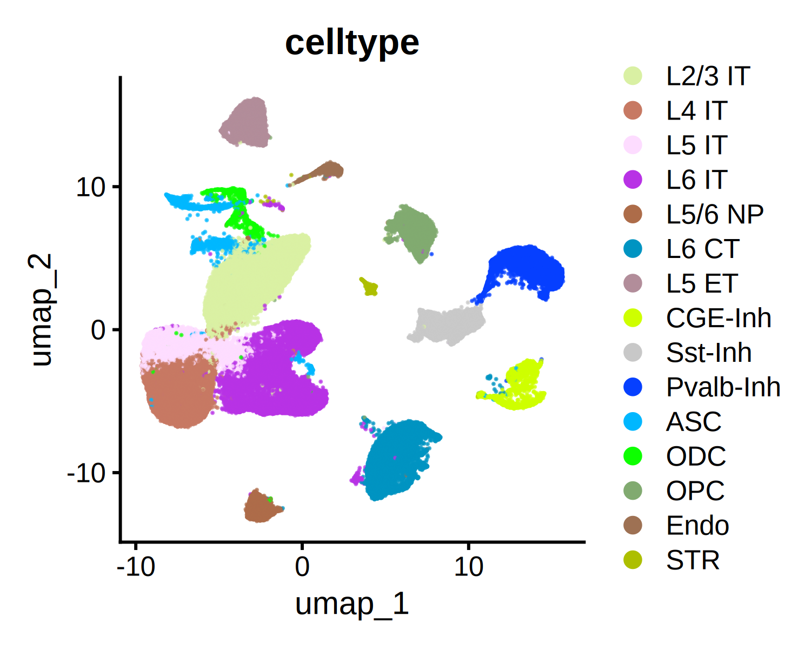
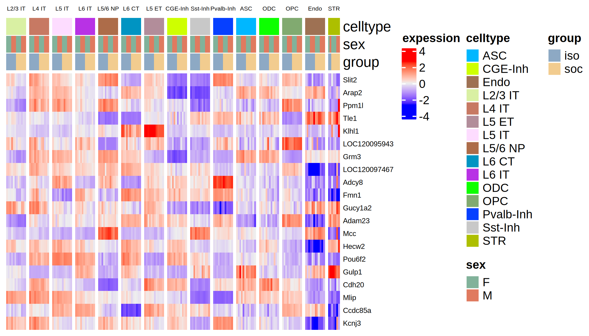
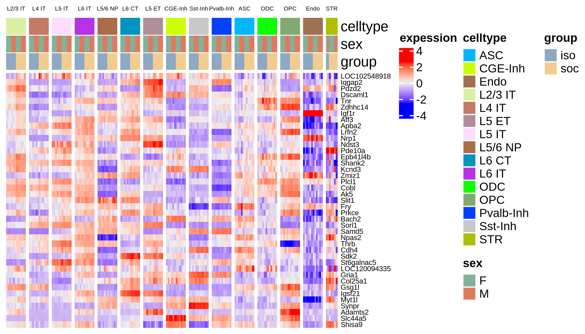
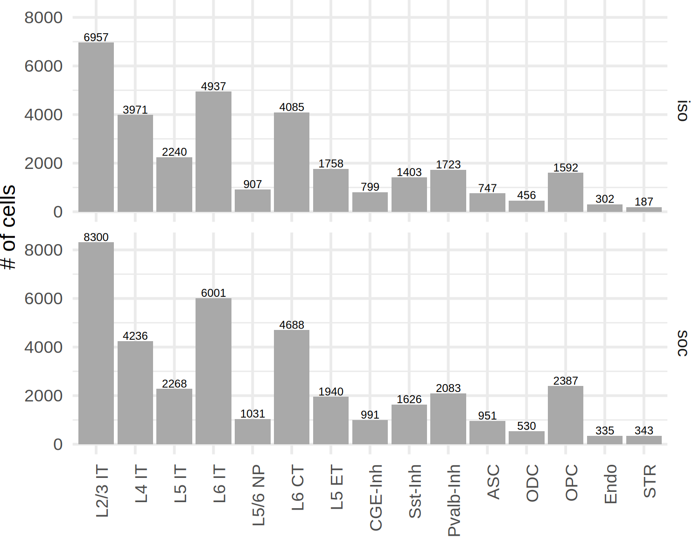

library(Seurat)
library(ggplot2)
library(dplyr)
library(patchwork)
library(stringr)
library(ggplot2)check expression on DEGs
## https://drive.google.com/file/d/16Jq6w_KAWwI2rBN7SYBw-7bm5qwVoFyt/view?usp=drive_link
seu_obj <- readRDS(file="/project/zhuzhuzhang/lyang/scaleBio_RNA_rat_brain/out_mRatBN/merged_seurat_obj_celltype_annotated_2.rds")
## https://drive.google.com/file/d/1Q7HV0PAfjac-19xNM455wGNN6zvkOyx4/view?usp=drive_link
pseudo_seu <- readRDS(file = "./pseudo_Seu_obj_2.rds")
## https://drive.google.com/file/d/1XbDy0A_rLt-kTDQvtqyCCGJ__qxdym7e/view?usp=drive_link
pseudo_de <- readRDS(file = "./pseudo_DESeq2_DEG_2.rds")Idents(seu_obj) <- "celltype"
gene_ls <- c("Slc17a7", ## Exc
"Prex1","Enpp2","Rfx3", ## L2/3 IT
"Rorb", "Kcnh5","Cadps2", ## L4 IT
"Ptgfran","Il1rapl2", ## L5 IT
"Mgat","Rspo2","Kcnab1", ## L6 IT
"Vwc2l","Nxph1",## L5/6 NP
"Foxp2","Tle4","Syt6", ## L6 CT
"Vat1l","Etv1","Tcerg1l", ## L5 ET
"Fgf13","Lamp5","Vip", "Npas3",## CGE-Inh
"Sst", "Grin3a", ## Sst-Inh
"Cemip","Man1c1", ## Pvalb-Inh
"Slc1a3","Atp1a2", ## ASC
"Mbp","Mobp","Plp1",## ODC
"Gfra1","Shisa6", ## OPC
"Flt1","Cyyr1", ## Endo
"Pbx3","Rgs9" ## STR
)
data_df <- cbind(sample_name=colnames(seu_obj@assays$SCT$data),
as.data.frame(t(as.matrix(seu_obj@assays$SCT$data[gene_ls[gene_ls %in% row.names(seu_obj@assays$SCT$data)],]))))
anno <- seu_obj@meta.data %>%
mutate(sample_name=row.names(.)) %>%
mutate(celltype_id=celltype) %>%
mutate(celltype_label=celltype)options(repr.plot.width = 10, repr.plot.height = 8, repr.plot.res = 300)
p <- sample_bar_plot(data_df,
anno,
genes = gene_ls[gene_ls %in% row.names(seu_obj@assays$SCT$data)],
grouping = "celltype",
log_scale = FALSE,
font_size = 9,
label_type = "angle")
print(p)
group_violin_plot(data_df,
anno,
genes = gene_ls[gene_ls %in% row.names(seu_obj@assays$SCT$data)],
grouping = "celltype",
log_scale = FALSE,
font_size = 7,
rotate_counts = TRUE)
head(pseudo_seu)| orig.ident | sample_name | celltype | celltype.group | |
|---|---|---|---|---|
| <chr> | <chr> | <chr> | <chr> | |
| iso-F-1_L2/3 IT | iso-F-1_L2/3 IT | iso-F-1 | L2/3 IT | L2/3 IT_iso |
| iso-F-1_L4 IT | iso-F-1_L4 IT | iso-F-1 | L4 IT | L4 IT_iso |
| iso-F-1_L5 IT | iso-F-1_L5 IT | iso-F-1 | L5 IT | L5 IT_iso |
| iso-F-1_L6 IT | iso-F-1_L6 IT | iso-F-1 | L6 IT | L6 IT_iso |
| iso-F-1_L5/6 NP | iso-F-1_L5/6 NP | iso-F-1 | L5/6 NP | L5/6 NP_iso |
| iso-F-1_L6 CT | iso-F-1_L6 CT | iso-F-1 | L6 CT | L6 CT_iso |
| iso-F-1_L5 ET | iso-F-1_L5 ET | iso-F-1 | L5 ET | L5 ET_iso |
| iso-F-1_CGE-Inh | iso-F-1_CGE-Inh | iso-F-1 | CGE-Inh | CGE-Inh_iso |
| iso-F-1_Sst-Inh | iso-F-1_Sst-Inh | iso-F-1 | Sst-Inh | Sst-Inh_iso |
| iso-F-1_Pvalb-Inh | iso-F-1_Pvalb-Inh | iso-F-1 | Pvalb-Inh | Pvalb-Inh_iso |
pseudo_de <- pseudo_de[-16]library(tidyr)
library(ComplexHeatmap)
library(tibble)
library(circlize)Loading required package: grid
========================================
ComplexHeatmap version 2.18.0
Bioconductor page: http://bioconductor.org/packages/ComplexHeatmap/
Github page: https://github.com/jokergoo/ComplexHeatmap
Documentation: http://jokergoo.github.io/ComplexHeatmap-reference
If you use it in published research, please cite either one:
- Gu, Z. Complex Heatmap Visualization. iMeta 2022.
- Gu, Z. Complex heatmaps reveal patterns and correlations in multidimensional
genomic data. Bioinformatics 2016.
The new InteractiveComplexHeatmap package can directly export static
complex heatmaps into an interactive Shiny app with zero effort. Have a try!
This message can be suppressed by:
suppressPackageStartupMessages(library(ComplexHeatmap))
========================================
========================================
circlize version 0.4.16
CRAN page: https://cran.r-project.org/package=circlize
Github page: https://github.com/jokergoo/circlize
Documentation: https://jokergoo.github.io/circlize_book/book/
If you use it in published research, please cite:
Gu, Z. circlize implements and enhances circular visualization
in R. Bioinformatics 2014.
This message can be suppressed by:
suppressPackageStartupMessages(library(circlize))
========================================
merge the DEG list
DEG_ls<-
lapply(seq_len(length(names(pseudo_de))), function(x) {
if (sum(pseudo_de[[x]]$p_val_adj < 0.05 & abs(pseudo_de[[x]]$avg_log2FC) > 0.3,na.rm = TRUE) > 0) {
pseudo_de[[x]] %>%
filter(p_val_adj < 0.05, abs(avg_log2FC) > 0.3)
}
})
names(DEG_ls) <- names(pseudo_de)
DEG_ls <- DEG_ls[!sapply(DEG_ls,is.null)]DEG_merged<- do.call(rbind,Map(cbind, DEG_ls, new_clumn = names(DEG_ls))) %>%
mutate(gene = str_split(row.names(.), "\\.", simplify = TRUE)[, 2]) %>%
filter(gene != "")DEG_merged[1:3,]| p_val | avg_log2FC | pct.1 | pct.2 | p_val_adj | new_clumn | gene | |
|---|---|---|---|---|---|---|---|
| <dbl> | <dbl> | <dbl> | <dbl> | <dbl> | <chr> | <chr> | |
| L2/3 IT.LOC102548918 | 2.089267e-15 | -1.3097989 | 1 | 1 | 5.556822e-11 | L2/3 IT | LOC102548918 |
| L2/3 IT.Iqgap2 | 1.322525e-12 | -0.7579870 | 1 | 1 | 3.517520e-08 | L2/3 IT | Iqgap2 |
| L2/3 IT.Pdzd2 | 2.604076e-12 | -0.8742842 | 1 | 1 | 6.926060e-08 | L2/3 IT | Pdzd2 |
DEG_up_ls<-
lapply(seq_len(length(names(pseudo_de))), function(x) {
if (sum(pseudo_de[[x]]$p_val_adj < 0.05 & pseudo_de[[x]]$avg_log2FC > 0.3,na.rm = TRUE) > 0) {
pseudo_de[[x]] %>%
filter(p_val_adj < 0.05, avg_log2FC > 0.3)
}
})
names(DEG_up_ls) <- names(pseudo_de)
DEG_up_ls <- DEG_up_ls[!sapply(DEG_up_ls,is.null)]DEG_down_ls<-
lapply(seq_len(length(names(pseudo_de))), function(x) {
if (sum(pseudo_de[[x]]$p_val_adj < 0.05 & pseudo_de[[x]]$avg_log2FC < (-0.3),na.rm = TRUE) > 0) {
pseudo_de[[x]] %>%
filter(p_val_adj < 0.05, avg_log2FC < (-0.3))
}
})
names(DEG_down_ls) <- names(pseudo_de)
DEG_down_ls <- DEG_down_ls[!sapply(DEG_down_ls,is.null)]names(DEG_down_ls)- 'L2/3 IT'
- 'L4 IT'
- 'L5 IT'
- 'L6 IT'
- 'L6 CT'
- 'L5 ET'
- 'CGE-Inh'
- 'OPC'
save the FC data for all celltypes for all DEGs
## gather fold change information together
DEG_ls<-
lapply(seq_len(length(names(pseudo_de))), function(x) {
pseudo_de[[x]] %>%
filter(row.names(.) %in% unique(isoVSsoc_DEG_ls$gene))
})
names(DEG_ls) <- names(pseudo_de)
all_DEG_gene <- do.call(rbind,Map(cbind, DEG_ls, new_clumn = names(DEG_ls))) %>%
mutate(gene = str_split(row.names(.), "\\.", simplify = TRUE)[, 2]) %>%
filter(gene != "")
all_DEG_gene %>%
select(new_clumn,avg_log2FC,gene) %>%
tidyr::pivot_wider(names_from = new_clumn, values_from = avg_log2FC) %>%
tibble::column_to_rownames(var="gene") %>%
write.table(file="./isoVSsoc_DEG_FC_celltype_matrix.tsv",quote=F,sep="\t",row.names=T)
all_DEG_gene %>%
select(new_clumn,p_val_adj,gene) %>%
tidyr::pivot_wider(names_from = new_clumn, values_from = p_val_adj) %>%
tibble::column_to_rownames(var="gene") %>%
write.table(file="./isoVSsoc_DEG_adjP_celltype_matrix.tsv",quote=F,sep="\t",row.names=T)make heatmap for all FCs in all celltypes
isoVSsoc_DEG_FC <- read.table("./isoVSsoc_DEG_FC_celltype_matrix.tsv", header=T,sep="\t",row.names=1)
isoVSsoc_DEG_P <- read.table("./isoVSsoc_DEG_adjP_celltype_matrix.tsv", header=T,sep="\t",row.names=1)rm.neg<-plyr::colwise(function(x){
return(ifelse(x < 0.0001,"****",
ifelse(x<0.001,"***",
ifelse(x<0.01,"**",
ifelse(x<0.05,"*","")))))})
p_sign_df <- rm.neg(isoVSsoc_DEG_P)
row.names(p_sign_df) <- row.names(isoVSsoc_DEG_P)
colnames(p_sign_df) <- c("L2/3 IT", "L4 IT", "L5 IT", "L6 IT", "L5/6 NP", "L6 CT", "L5 ET", "CGE-Inh", "Sst-Inh", "Pvalb-Inh", "ASC", "ODC", "OPC", "Endo")
colnames(isoVSsoc_DEG_FC) <- c("L2/3 IT", "L4 IT", "L5 IT", "L6 IT", "L5/6 NP", "L6 CT", "L5 ET", "CGE-Inh", "Sst-Inh", "Pvalb-Inh", "ASC", "ODC", "OPC", "Endo")
p_sign_df[is.na(p_sign_df)] <- ""
p_sign_df[abs(isoVSsoc_DEG_FC)<0.3] <- ""summary(isoVSsoc_DEG_FC) L2/3 IT L4 IT L5 IT L6 IT
Min. :-1.30980 Min. :-1.09734 Min. :-0.8480 Min. :-1.111527
1st Qu.:-0.63743 1st Qu.:-0.38195 1st Qu.:-0.2615 1st Qu.:-0.569098
Median :-0.51781 Median :-0.17385 Median :-0.1304 Median :-0.424604
Mean :-0.34255 Mean :-0.08588 Mean :-0.0397 Mean :-0.336213
3rd Qu.: 0.07853 3rd Qu.: 0.21437 3rd Qu.: 0.2450 3rd Qu.:-0.007744
Max. : 0.79294 Max. : 0.86125 Max. : 0.8612 Max. : 0.451747
L5/6 NP L6 CT L5 ET CGE-Inh
Min. :-1.00000 Min. :-1.1010 Min. :-0.82254 Min. :-0.7605
1st Qu.:-0.43982 1st Qu.:-0.6284 1st Qu.:-0.49044 1st Qu.:-0.4358
Median :-0.25787 Median :-0.4191 Median :-0.25448 Median :-0.2937
Mean :-0.24905 Mean :-0.3686 Mean :-0.18328 Mean :-0.2709
3rd Qu.:-0.08553 3rd Qu.:-0.0889 3rd Qu.: 0.08577 3rd Qu.:-0.1583
Max. : 0.71543 Max. : 0.4759 Max. : 0.77626 Max. : 1.0000
Sst-Inh Pvalb-Inh ASC ODC
Min. :-1.1043 Min. :-0.65208 Min. :-1.3445 Min. :-1.25096
1st Qu.:-0.4386 1st Qu.:-0.36391 1st Qu.:-0.7263 1st Qu.:-0.71387
Median :-0.3561 Median :-0.29677 Median :-0.5488 Median :-0.46949
Mean :-0.3346 Mean :-0.28294 Mean :-0.4687 Mean :-0.40103
3rd Qu.:-0.2346 3rd Qu.:-0.21554 3rd Qu.:-0.1787 3rd Qu.:-0.09184
Max. : 0.4150 Max. : 0.05965 Max. : 1.1043 Max. : 0.62409
OPC Endo
Min. :-1.6229 Min. :-2.00000
1st Qu.:-0.9650 1st Qu.:-0.52195
Median :-0.7452 Median :-0.28063
Mean :-0.7249 Mean :-0.31877
3rd Qu.:-0.4900 3rd Qu.: 0.01543
Max. : 0.3806 Max. : 1.28011 col_fun = colorRamp2(c(-1, 0, 1), c("#0077b6", "white", "#e63946"))
p = Heatmap(isoVSsoc_DEG_FC, name = "iso/soc\navg_logFC", col = col_fun,
cluster_columns = F,
show_row_dend = F,
heatmap_legend_param = list(
legend_direction = "horizontal",
legend_width = unit(6, "cm")),
row_names_gp = grid::gpar(fontsize = 6),
column_names_gp = grid::gpar(fontsize = 6),
cell_fun = function(j, i, x, y, width, height, fill) {
gb = textGrob("*")
gb_w = convertWidth(grobWidth(gb), "mm")
gb_h = convertHeight(grobHeight(gb), "mm")
grid.text(sprintf("%s", p_sign_df[i, j]), x, y - gb_h*0.5 + gb_w*0.4, gp = gpar(fontsize = 10))
})
lgd1 = Legend(labels=c("<0.0001","<0.001","<0.01","<0.05"),pch = c("**** ","*** ","** ","* "), title = "adj.p", type = "points",
background = "white",direction = "horizontal")
lgd2 = Legend(labels="gene not detected",legend_gp = gpar(fill = "grey"), title = "NA")
pdf("isoVSsoc_DEG_logFC_heatmap.pdf",width=5,height=7)
draw(p,annotation_legend_list = list(lgd1),heatmap_legend_side="bottom", annotation_legend_side="right",
legend_grouping = "original")
dev.off()Warning message:
“The input is a data frame-like object, convert it to a matrix.”
png: 2
isoVSsoc_DEG_ls$P_label<-
symnum(isoVSsoc_DEG_ls$p_val_adj, cutpoints = c(0, 0.0001, 0.001, 0.01, 0.05,1),
symbols = c("****", "***", "**", "*", "ns"),
abbr.colnames = FALSE, na = "")Idents(seu_obj) <- "celltype"make_vlnplot <-
function(genes=NULL,celltype=NULL,label_df=NULL){
VlnPlot(seu_obj,
features = genes,
idents=celltype,
split.by = "group",
pt.size = 0.0,
#split.plot = T,
log=FALSE)&
scale_fill_manual(values=c("iso"="#e31a1c","soc"="#ffda79")) &
annotate("text",x=label_df$new_clumn,y=Inf,label=label_df$P_label,vjust=1,hjust=0.5) &
#stat_summary(fun = median, fun.min = median, fun.max = median,
# geom = "crossbar",
# width = 0.6,
# position = position_dodge(width = .70)) &
xlab("") &
ylab("Gene Expression") &
stat_summary(fun = "mean",
geom = "point",
color = "black",
position = position_dodge(width = .90)) &
labs(caption = paste("adj.p: ","**** <0.0001","*** <0.001","** <0.01","* <0.05")) &
guides(fill = guide_legend(override.aes = list(linetype = 0,size = 0)),
color = guide_legend(override.aes = list(linetype = 0,size=0)))
}gene_for_plot <- read.csv("./genes_for_vlnplot.csv",header=F,sep="\t")gene_for_plot| V1 | V2 |
|---|---|
| <chr> | <chr> |
| LOC102548918 | L2/3 IT,L5 IT,L6 CT,L6 IT,OPC |
| Slit2 | L2/3 IT,L4 IT,L5 IT |
| Aff3 | L2/3 IT,L5 ET,L6 CT,L6 IT |
| Pde10a | L2/3 IT,L5 ET,L6 CT,L6 IT |
| Dscaml1 | L2/3 IT,L6 IT,OPC |
| Samd5 | L5 IT,L6 CT,L6 IT |
| Apba2 | L2/3 IT,L4 IT |
| Grm3 | L2/3 IT,L5 ET |
| Klhl1 | L2/3 IT,L5 ET |
| Pdzd2 | L2/3 IT,L5 ET |
| Ppm1l | L2/3 IT,L5 ET |
| Kcnd3 | L2/3 IT,L6 CT |
| Zmiz1 | L2/3 IT,L6 IT |
| Fmn1 | L4 IT,L6 IT |
| Myt1l | L5 ET,L6 CT |
label_df <- data.frame(celltype=c("L2/3 IT","L5 IT"),label=c("*","ns"))options(repr.plot.width = 8, repr.plot.height = 4, repr.plot.res = 300)
make_vlnplot(genes="Pde10a",
celltype=names(pseudo_de),
label_df=subset(isoVSsoc_DEG_ls,gene=="Pde10a"))Scale for fill is already present.
Adding another scale for fill, which will replace the existing scale.
pdf(file = "./Vlnplot_for_overlapping_DEGs.pdf",width=4,height=4,onefile=TRUE)
for(i in seq_len(nrow(gene_for_plot))){
p <- make_vlnplot(genes=gene_for_plot[i,"V1"],
celltype=unlist(stringr::str_split(gene_for_plot[i,"V2"],",")))
print(p)
}
dev.off()seu_obj@meta.data$group <- factor(seu_obj@meta.data$group,levels=c("soc","iso"))## make plot for those genes in all celltypes
pdf(file = "./Vlnplot_for_isoVSsoc_DEGs_in_all_celltypes (log=F).pdf",width=8,height=4,onefile=TRUE)
for(i in seq_len(nrow(gene_for_plot))){
p <- make_vlnplot(genes=gene_for_plot[i,"V1"],
celltype=names(pseudo_de),
label_df=subset(isoVSsoc_DEG_ls,gene==gene_for_plot[i,"V1"]))
print(p)
}
dev.off()dev.off()
pdf: 3
make umaps for DEGs
my_cols = c("L2/3 IT" = "#D9F0A3",
"L4 IT" = "#C77963",
"L5 IT" = "#FDDCFF",
"L6 IT" = "#B832E5",
"L5/6 NP" = "#AD6C49",
"L5 ET" = "#B28D9A",
"L6 CT" = "#0094C2",
"CGE-Inh" = "#CEFF00",
"Sst-Inh" = "#C8C8C8",
"Pvalb-Inh" = "#0640FF",
"ASC" = "#00B7FF",
"ODC" = "#0DFF00",
"OPC" = "#81AA70",
"STR" = "#ADBF00",
"Endo" = "#9E7153")options(repr.plot.width = 5, repr.plot.height = 4, repr.plot.res = 300)
DimPlot(seu_obj, reduction = "umap", group.by = "celltype",alpha=0.7,cols = my_cols)
pdf(file = "./umap_for_overlapping_DEGs.pdf",width=10,height=5,onefile=TRUE)
for(i in seq_len(nrow(gene_for_plot))){
p <- FeaturePlot(seu_obj, features = gene_for_plot[i,"V1"],split.by="group") +
theme(legend.position = c(-0.35,0.2))+
theme(legend.text=element_text(size=10, color="black"))
print(p)
}
dev.off()
png: 2
make heatmap for DEGs
all_up_gene <- do.call(rbind,Map(cbind, DEG_up_ls, new_clumn = names(DEG_up_ls))) %>%
mutate(gene = str_split(row.names(.), "\\.", simplify = TRUE)[, 2]) %>%
filter(gene != "") %>%
pull(gene) %>%
unique()options(repr.plot.width = 7, repr.plot.height = 4, repr.plot.res = 300)
col_anno = data.frame(celltype=pseudo_seu@meta.data$celltype,
sex=str_split(pseudo_seu@meta.data$sample_name,"-",simplify = T)[,2],
group=str_split(pseudo_seu@meta.data$sample_name,"-",simplify = T)[,1],
row.names=row.names(pseudo_seu@meta.data))
column_ha = HeatmapAnnotation(celltype=col_anno$celltype,
sex=col_anno$sex,group=col_anno$group,
col = list(sex = c("F"="#81b29a","M"="#e07a5f"),
group = c("iso"="#8da9c4","soc"="#f2cc8f"),
celltype = c("L2/3 IT" = "#D9F0A3","L4 IT" = "#C77963","L5 IT" = "#FDDCFF",
"L6 IT" = "#B832E5","L5/6 NP" = "#AD6C49","L5 ET" = "#B28D9A",
"L6 CT" = "#0094C2","CGE-Inh" = "#CEFF00","Sst-Inh" = "#C8C8C8",
"Pvalb-Inh" = "#0640FF","ASC" = "#00B7FF","ODC" = "#0DFF00",
"OPC" = "#81AA70","Endo" = "#9E7153","STR" = "#ADBF00")))
lgd1 = Legend(title = "group", at = c("iso","soc"), legend_gp = gpar(fill = 1:2))
lgd2 = Legend(title = "sex", at = c("F","M"), legend_gp = gpar(fill = 3:4))
p <- Heatmap(t(scale(t(pseudo_seu@assays$RNA$data[all_up_gene,]))),
top_annotation = column_ha,
cluster_rows = FALSE,
cluster_columns = FALSE,
row_names_gp = gpar(fontsize = 6),
column_names_gp = gpar(fontsize = 6),
column_split = factor(col_anno$celltype,levels=unique(col_anno$celltype)),
column_title_gp = gpar( fontsize = 5),
name="expession",
show_column_names = FALSE
)p
all_down_gene <- do.call(rbind,Map(cbind, DEG_down_ls, new_clumn = names(DEG_down_ls))) %>%
mutate(gene = str_split(row.names(.), "\\.", simplify = TRUE)[, 2]) %>%
filter(gene != "") %>%
pull(gene) %>%
unique()
options(repr.plot.width = 7, repr.plot.height = 4, repr.plot.res = 300)
col_anno = data.frame(celltype=pseudo_seu@meta.data$celltype,
sex=str_split(pseudo_seu@meta.data$sample_name,"-",simplify = T)[,2],
group=str_split(pseudo_seu@meta.data$sample_name,"-",simplify = T)[,1],
row.names=row.names(pseudo_seu@meta.data))
column_ha = HeatmapAnnotation(celltype=col_anno$celltype,
sex=col_anno$sex,group=col_anno$group,
col = list(sex = c("F"="#81b29a","M"="#e07a5f"),
group = c("iso"="#8da9c4","soc"="#f2cc8f"),
celltype = c("L2/3 IT" = "#D9F0A3","L4 IT" = "#C77963","L5 IT" = "#FDDCFF",
"L6 IT" = "#B832E5","L5/6 NP" = "#AD6C49","L5 ET" = "#B28D9A",
"L6 CT" = "#0094C2","CGE-Inh" = "#CEFF00","Sst-Inh" = "#C8C8C8",
"Pvalb-Inh" = "#0640FF","ASC" = "#00B7FF","Oligo" = "#21F4CC",
"ODC" = "#0DFF00","OPC" = "#81AA70","STR" = "#ADBF00","Endo" = "#9E7153")))
lgd1 = Legend(title = "group", at = c("iso","soc"), legend_gp = gpar(fill = 1:2))
lgd2 = Legend(title = "sex", at = c("F","M"), legend_gp = gpar(fill = 3:4))
p<- Heatmap(t(scale(t(pseudo_seu@assays$RNA$data[all_down_gene,]))),
top_annotation = column_ha,
cluster_rows = FALSE,
cluster_columns = FALSE,
row_names_gp = gpar(fontsize = 6),
column_names_gp = gpar(fontsize = 6),
column_split = factor(col_anno$celltype,levels=unique(col_anno$celltype)),
column_title_gp = gpar( fontsize = 5),
name="expession",
show_column_names = FALSE
)p
options(repr.plot.width = 5, repr.plot.height = 4, repr.plot.res = 300)
seu_obj@meta.data %>%
#count(celltype) %>%
filter(celltype!="NA") %>%
ggplot(aes(x=celltype))+
geom_bar(fill="darkgrey")+
geom_text(stat='count', aes(label=..count..), vjust=-0.2,size=2)+
#geom_text(aes(label = n), vjust = 0.5,size=2)+
facet_grid(group~.)+
labs(x="",y="# of cells")+
theme_minimal()+
theme(axis.text.x=element_text(angle=90,hjust=1),
plot.margin = unit(c(0,0,0,0), "cm"))
GO analysis for DEGs
library(stringr)
library(viridis)
library(org.Rn.eg.db)
library(clusterProfiler)
library(openxlsx)dir.create("./isoVSsoc_DEG_GO_2")DEG_ls <- lapply(pseudo_de, function(x){ x %>% filter(p_val_adj<0.05,abs(avg_log2FC) >0.3) %>% row.names()})
names(DEG_ls) = str_replace_all(string =names(DEG_ls) ,pattern = "\\/" ,replacement = "")
GO_ls <- list()
for(i in seq_len(length(DEG_ls))){
if(length(DEG_ls[[i]])>5){
go_res <- enrichGO(DEG_ls[[i]],OrgDb=org.Rn.eg.db,keyType="SYMBOL",ont="BP",pvalueCutoff = 0.05, qvalueCutoff = 1)
if(!is.null(go_res@result)){
GO_ls[names(DEG_ls)[i]] <- go_res
}
}
}
cp_GO_ls <- GO_ls
write.xlsx(lapply(cp_GO_ls,function(df){df@result}),file="./isoVSsoc_DEG_GO_2/isoVSsoc_DEG_FC0.3_GO.xlsx",asTable=T)pdf("/project/zhuzhuzhang/lyang/scaleBio_RNA_rat_brain/out_mRatBN/isoVSsoc_DEG_GO_2/isoVSsoc_DEG_FC0.3_GO_dotplot.pdf",onefile=TRUE)
lapply(seq_along(GO_ls),
function(i){
if(!is.null(GO_ls[[i]])){
if(dim(GO_ls[[i]]@result)[1]>0){
if(sum(GO_ls[[i]]@result$p.adjust<0.05)>0){
GO_ls[[i]]@result %>%
filter(p.adjust<0.05) %>%
mutate(ratio=as.numeric(str_split(GeneRatio,"/",simplify=T)[,1])/as.numeric(str_split(GeneRatio,"/",simplify=T)[,2])) %>%
slice_head(n=15) %>%
arrange(ratio) %>%
mutate(Description=factor(Description,levels=Description)) %>%
ggplot(aes(x=ratio,y=Description))+
geom_point(aes(color=p.adjust,size=ratio))+
labs(title=paste0(names(GO_ls)[i]," ","iso vs soc ","(",length(DEG_ls[[i]]) ,")"))+
scale_y_discrete(labels = function(x) str_wrap(x, width = 50))+
scale_color_viridis(option = "D")
}
}
}
}
)
dev.off()